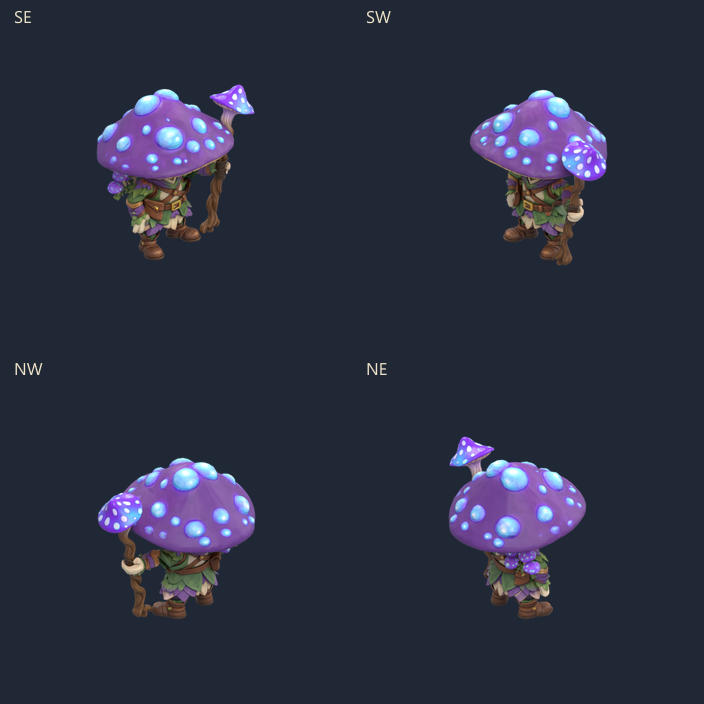
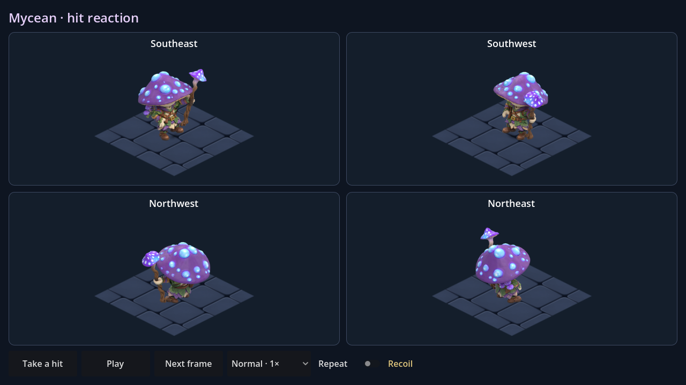
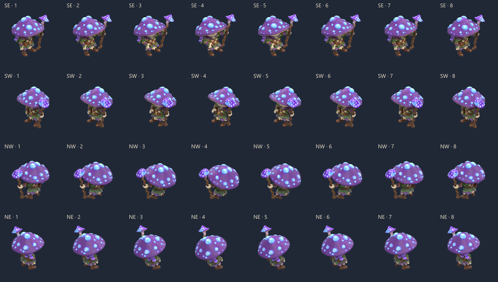

Un recul du buste, les genoux amortissent le choc et la main garde le bâton. Les pieds restent plantés, puis le personnage retrouve exactement sa posture initiale. Huit poses, quatre vraies directions isométriques.

Ouvrir MyceanHurt.tscn dans Godot puis F6 : rejouer le choc, pause, pas-à-pas, vitesses ×0,5 à ×2 et répétition facultative. Scène isolée ; cette animation n'est pas encore branchée aux raids.


Le modèle et ses textures restent inchangés. Le grand chapeau masque une partie du visage ; aucune expression faciale peinte ou fermeture de paupière n'est ajoutée.
Reproduction et validation · Source Blender avec les poses · Contrôle de la source sauvegardée